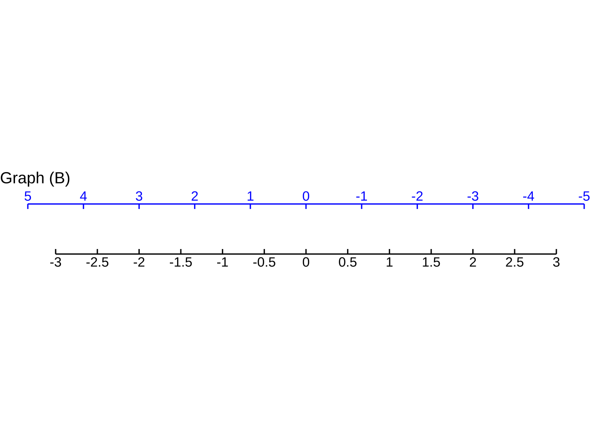
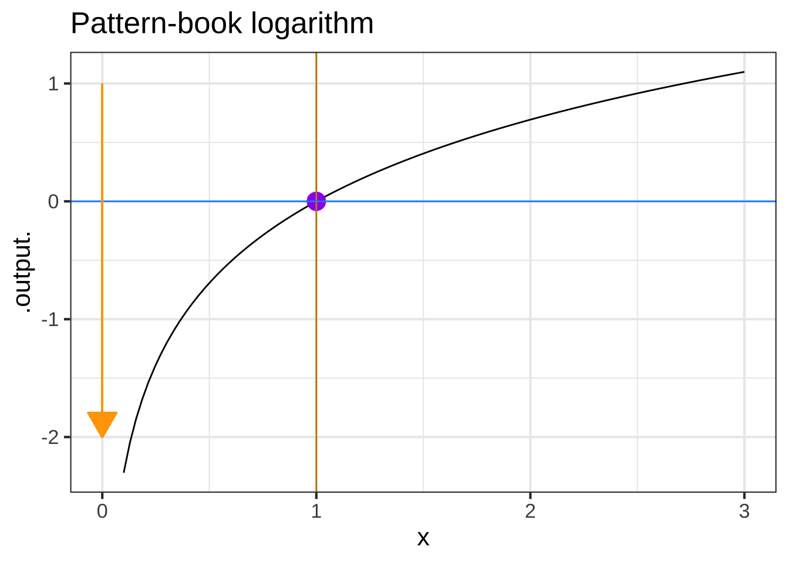
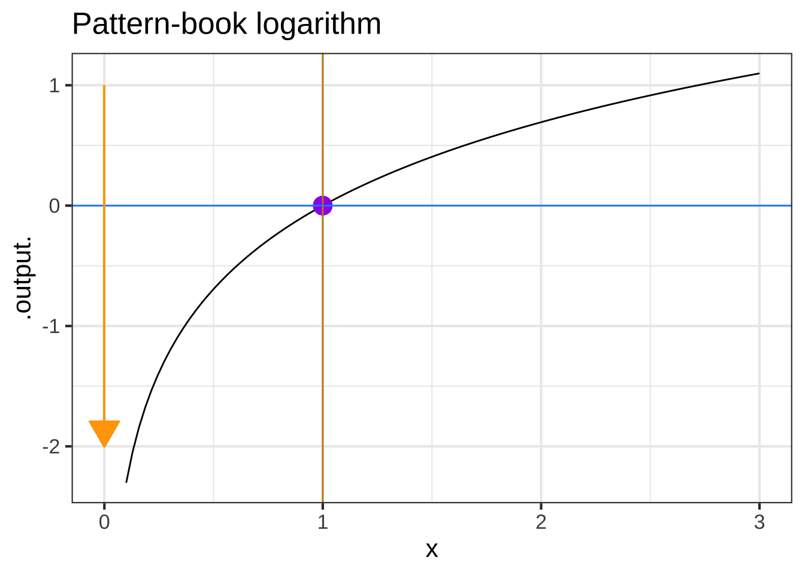
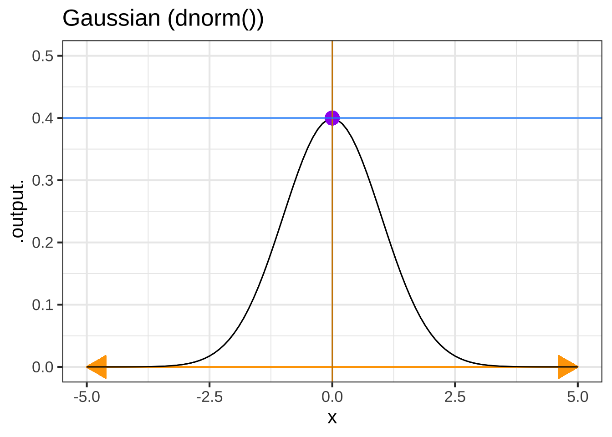
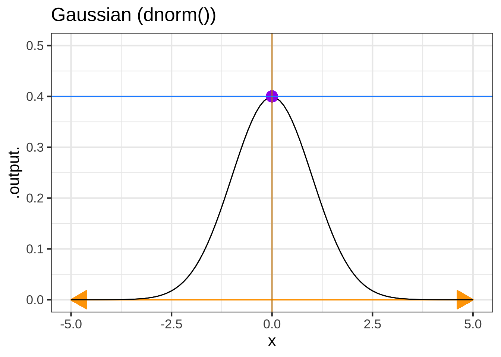
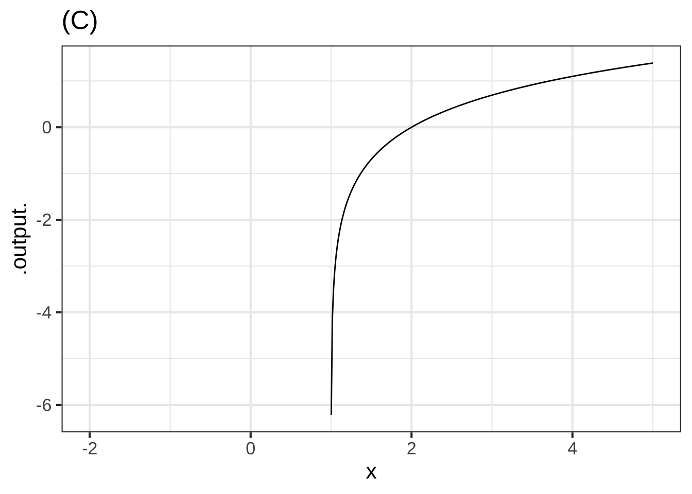

2022-04-05
Chapter 7 Parameters
The pattern-book functions provide the modeler with a collection of shapes. They are not yet fully suited to represent real-world phenomena. To illustrate, consider Figure 7.1 which shows the number of officially confirmed COVID-19 cases in the US in March 2020.
The case count versus time in the COVID pandemic was widely and appropriately described as “exponential.” So it seems appropriate alongside the data Figure 7.1 shows the function \(\text{cases}(t) \equiv e^t\) plotted as a \(\color{magenta}{\text{magenta}}\) curve.
Figure 7.1: Cumulative officially confirmed COVID-19 cases during the month of March, 2020. The red curve is \(e^t\)
There’s an obvious mismatch between the data and the function \(e^t\). Does this mean the COVID pattern is not exponential?
For the pattern book functions, the input is always a pure number. For instance, we read \(t=10\) off the horizontal axis at which point \(e^t {\left.\Large\right|}_{t=10} \approx 22000\), consistent with the curve shown in the graph.
But the place on the horizontal axis marked 10 does not correspond to the number 10. Rather, that place stands for “10 days,” a quantity with units. Perhaps surprisingly, there is no such thing as \(e^{10\,\text{days}}\). The reason for this will be detailed in Chapter ??, but for now we’ll simply point out that the domain of \(\exp()\) is the set of real numbers, and real numbers don’t have units.
If we want the input to \(\text{cases}(t)\) to be denominated in days, we’ll have to convert \(t\) to a pure pure number (e.g. 10, not “10 days”) before the quantity is handed off as the argument to \(\exp()\). We do this by introducing a parameter when we use the exponential function for describing relationships between quantities. The standard from for this is \(e^{kt}\) as opposed to \(e^t\). The \(k\) parameter will be a quantity with units of “per-day.” Suppose we set \(k=0.2 per day\). Then \(k t{\LARGE\left.\right|}_{t=10 days} = 2\), a pure number: \[0.2\, \text{day}^{-1} \cdot 10\, \text{days} = 0.2\ .\] The use of a parameter like \(k\) does more than handle the formality of converting input quantities into pure numbers. Having a choice for \(k\) allows us to stretch or compress the function to align with the data. Figure 7.2 plots the modeling version of the exponential function to the COVID-case data:
## Warning: Removed 1 row(s) containing missing values (geom_path).Figure 7.2: Using the function form \(A e^{kt}\), with parameters \(k=0.19\) per day and \(A = 573\) cases, matches the COVID-case data well.
This chapter will introduce new functions, based on the pattern-book functions, but that have parameters so that the inputs and outputs can be quantities rather than pure numbers.
7.1 Parallel scales
At the heart of how we’re going to use the pattern-book functions to model the relationship between quantities is the idea of conversion between one scale and another. Consider these everyday objects: a thermometer and a ruler.

Each object presents a read-out of what’s being measured—temperature or length—on two different scales. At the same time, the objects provide a way to convert one scale to another.
A function gives the output for any given input. We represent the input value as a position on a number line—which we call an “axis”—and the output as a position on another output line, almost always drawn perpendicular to one another. But the two number lines can just as well be parallel to one another. To evaluate the function, find the input value on the input scale and read off the corresponding output.
We can translate the correspondance between one scale and the other into the form of a straight-line function. For instance, if we know the temperature in Fahrenheit (\(^\circ\)F) and want to convert it to Celsius (\(^\circ C\)) we have the following function: \[C(F) \equiv {\small\frac{5}{9}}(F-32)\ .\] Similarly, converting inches to centimeters can be accomplished with \[\text{cm(inches)} \equiv 2.54 \, (\text{inches}-0)\ .\] Both of these scale conversion functions have the form of the straight-line function, which can be written as \[f(x) \equiv a x + b\ \ \ \text{or, equivalently as}\ \ \ \ f(x) \equiv a(x-x_0)\ ,\] where \(a\), \(b\), and \(x_0\) are parameters.
In Section 7.2, we’ll use the \(ax + b\) form of scale conversion, but we could equally well have used \(a(x-x_0)\).
In Section 7.3 we’ll introduce a second scale conversion function, still in the form of a straight-line function: \(A x + B\). The use of the lower-case parameter names (\(a\), \(b\)) versus the upper-case parameter names (\(A\), \(B\)) will help us distinguish the two different uses for scale conversion, namely input scaling versus output scaling.
7.2 Input scaling
Figure 7.3 is based on the data frame RI-tide which is a minute-by-minute record of the tide level in Providence, Rhode Island (USA) for the period April 1 to 5, 2010. The level variable is measured in meters; the hour variable gives the time of the measurement in hours after midnight at the start of April 1.
Figure 7.3: Tide levels oscillate up and down over time. This is analogous to the \(\sin(t)\) pattern-book function.
The pattern-book \(\sin()\) and the function \(\color{magenta}{\text{level}}\color{blue}{(hour)}\) have similar shapes, so it seems reasonable to model the tide data as a sinusoid. However, the scale of the axes is different on the two graphs.
To model the tide with a sinusoid, we need to modify the sinusoid to change the scale of the input and output. First, let’s look at how to accomplish the input scaling. Specifically, we want the pure-number input \(t\) to the sinusoid be a function of the quantity \(hour\). Our framework for this re-scaling is the straight-line function. We will replace the pattern-book input \(t\) with a function \[t(\color{blue}{hour}) \equiv a\, \color{blue}{hour} + b\ .\]
The challenge is to find values for the parameters \(a\) and \(b\) that will transform the \(\color{blue}{\mathbf{\text{blue}}}\) horizontal axis into the black horizontal axis, like this: By comparing the two axes, we can estimate that \(\color{blue}{10} \rightarrow 4\) and \(\color{blue}{100} \rightarrow 49\). With these two coordinate points, we can find the straight-line function that turns \(\color{blue}{\mathbf{\text{blue}}}\) into black by plotting the coordinate pairs \((\color{blue}{0},1)\) and \((\color{blue}{100}, 51)\) and finding the straight-line function that connects the points.
## Warning: Removed 2 row(s) containing missing values (geom_path).You can calculate for yourself that the function that relates \(\color{blue}{\mathbf{\text{blue}}}\) to black is \[t(\color{blue}{time}) = \underbrace{\frac{1}{2}}_a \color{blue}{time} \underbrace{-1\LARGE\strut}_b\]
Replacing the pure number \(t\) as the input to pattern-book \(\sin(t)\) with the transformed \(\frac{1}{2} \color{blue}{time} 1 1\) we get a new function: \[g(\color{blue}{time}) \equiv \sin\left(\strut {\small\frac{1}{2}}\color{blue}{time} - 1\right)\ .\] Figure ?? plots \(g()\) along with the actual tide data. library(gtable) g2 <- ggplotGrob(p2) g3 <- ggplotGrob(p3) g <- rbind(g2, g3, size = “first”) g\(widths <- unit.pmax(g2\)widths, g3$widths) grid.newpage() grid.draw(g)
7.3 Output scaling
Just as the natural input needs to be scaled before it reaches the pattern-book function, so the output from the pattern-book function needs to be scaled before it presents a result suited for interpreting in the real world.

Figure 7.4: Natural quantities must be scaled to pure numbers before being suited to the pattern-book functions. The output from the pattern-book function is a pure number which is scaled to the natural quantity of interest.
The overall result of input and output scaling is to tailor the pattern-book function so that it is ready to be used in the real world.
Let’s return to Figure ?? which shows that the function \(g(\color{blue}{time})\), which scales the input to the pattern-book sinusoid, has a much better alignment to the tide data. Still, the vertical axes of the two graphs in the figure are not the same.
This is the job for output scaling, which takes the output of \(g(\color{blue}{time})\) (bottom graph) and scales it to match the \(\color{magenta}{level}\) axis on the top graph. That is, we seek to align the black vertical scale with the \(\color{magenta}{\mathbf{\text{magenta}}}\) vertical scale. To do this, we note that the range of the \(g(\color{blue}{time})\) is -1 to 1, whereas the range of the tide-level is about 0.5 to 1.5. The output scaling will take the straight-line form \[\color{magenta}{\text{level}}(\color{blue}{time}) = A\, g(\color{blue}{time}) + B\] or, in graphical terms
We can figure out parameters \(A\) and \(B\) by finding the straight-line function that connects the coordinate pairs \((-1, \color{magenta}{0.5})\) and \((1, \color{magenta}{1.5})\) as in Figure 7.5.
Figure 7.5: Finding the straight-line function that converts \(-1 \rightarrow \color{magenta}{0.5}\) and converts \(1 \rightarrow \color{magenta}{1.5}\)
You can confirm for yourself that the function that does the job is \[\color{magenta}{\text{level}} = 0.5 g(\color{blue}{time}) + 1\ .\]
Putting everything together, that is, scaling both the input to pattern-book \(\sin()\) and the output from pattern-book \(\sin()\), we get
\[\color{magenta}{\text{level}}(\color{blue}{time}) = \underbrace{0.5}_A \sin\left(\underbrace{\small\frac{1}{2}}_a \color{blue}{time} \underbrace{-1}_b\right) + \underbrace{1}_B\]
7.4 A procedure for building models
We’ve been using pattern-book functions as the intermediaries between input scaling and output scaling, using this format.
\[f(x) \equiv A e^{ax + b} + B\ .\] We can use the other pattern-book functions—the gaussian, the sigmoid, the logarithm, the power-law functions—in exactly the same way. That is, the basic framework for modeling is this:
\[\text{model}(x) \equiv A\, {g_{pattern\_book}}(ax + b) + B\ ,\] where \(g_{pattern\_book}()\) is one of the pattern-book functions. To construct a basic model, you task has two parts:
Pick the specific pattern-book function whose shape resembles that of the relationship you are trying to model. For instance, we picked \(e^x\) for modeling COVID cases versus time (at the start of the pandemic). We picked \(\sin(x)\) for modeling tide levels versus time.
Find numerical values for the parameters \(A\), \(B\), \(a\), and \(b\). In Chapter ?? we’ll show you some ways to make this part of the task easier.
It’s remarkable that models of a very wide range of real-world relationships between pairs of quantities can be constructed by picking one of a handful of functions, then scaling the input and the output. As we move on to other Blocks in MOSAIC Calculus, you’ll see how to generalize this to potentially complicated relationships among more than two quantities. That’s a big part of the reason you’re studying calculus.
7.5 Other formats for scaling
Often, modelers choose to use input scaling in the form \(a (x - x_0)\) rather than \(a x + b\). The two are completely equivalent when \(x_0 = - b/a\). The choice between the two forms is largely a matter of convention. But almost always the output scaling is written in the format \(A y + B\).
Example 7.1 For the COVID case-number data shown in Figure 7.2, we found that a reasonable match to the data can be had by input- and output-scaling the exponential: \[\text{cases}(t) \equiv \underbrace{573}_A e^{\underbrace{0.19}_a\ t}\ .\]
You might wonder why the parameters \(B\) and \(b\) aren’t included in the model. One reason is that cases and the exponential function already have the same range: zero and upwards. So there’s no need to shift the output with a parameter B.
Another reason has to do with the algebraic properties of the exponential function. Specifically, \[e^{a x + b}= e^b e^{ax} = {\cal A} e^{ax}\] where \({\cal A} \equiv e^b\).
In the case of exponentials, writing the input scaling in the form \(e^{a(x-x_0)}\) can provide additional insight.
A bit of symbolic manipulation of the model can provide some additional insight. As you know, the properties of exponentials and logarithms are such that \[A e^{at} = e^{\log(A)} e^{at} = e^{a t + \log(A)} = e^{a\left(\strut t + \log(A)/a\right)} = e^{a(t-t_0)}\ ,\] where \[t_0 = - \log(A)/a = - \log(593)/0.19 = -33.6\ .\] You can interpret \(t_0\) as the starting point of the pandemic. When \(t = t_0\), the model output is \(e^{k 0} = 1\): the first case. According to the parameters we matched to the data for March, the pandemic’s first case would have happened about 33 days before March 1, which is late January. We know from other sources of information, the outbreak began in late January. It’s remarkable that even though the curve was constructed without any data from January or even February, the data from March, translated through the curve-fitting process, pointed to the start of the outbreak. This is a good indication that the exponential form for the model is fundamentally correct.
7.6 Parameterization idioms
English has many idioms, phrases to express an idea to those in the know, but will be confusing to others to take the phrase literally. Examples of such idioms (many of which come from Shakespeare’s plays):
- break the ice
- it’s Greek to me
- elbow room
- beat around the bush
- break a leg
Part of the process of learning a language is gaining familiarity with idioms.
The same is true for mathematics as it’s spoken in different disciplines. Such idioms appear in the way input scaling is parameterized and the names used for the parameters. Often, the idiomatic parameterization is intended to make it easy to give a value to a parameter from easy-to-make observations. Knowing and using the idiom of mathematical notation will help you read and write mathematics more fluently.
Here are some input-scaling parameterizations that are used in practice.
| Function | Written form | Parameter 1 | Parameter 2 |
|---|---|---|---|
| Exponential | \(e^{kt}\) | \(k\) “exponential constant”1 | Not used |
| Exponential | \(e^{t/\tau}\) | \(\tau\) “time constant”2 | Not used |
| Exponential | \(2^{t/\tau_2}\) | \(\tau_2\) “doubling time”3 | Not used |
| Power-law | \([x - x_0]^p\) | \(x_0\) x-intercept | exponent |
| Sinusoid | \(\sin\left(\frac{2 \pi}{P} (t-t_0)\right)\) | \(P\) “period” | \(t_0\) “time shift” |
| Sinusoid | \(\sin(\omega t + \phi)\) | \(\omega\) “angular frequency” | \(\phi\) “phase shift” |
| Sinusoid | \(\sin(2 \pi \omega t + \phi)\) | \(\omega\) “frequency” | \(\phi\) “phase shift” |
| Gaussian | dnorm(x, mean, sd) | “mean” (center) | sd “standard deviation” |
| Sigmoid | pnorm(x, mean, sd) | “mean” (center) | sd “standard deviation” |
| Straight-line | \(mx + b\) | \(m\) “slope” | \(b\) “y-intercept” |
| Straight-line | \(m (x-x_0)\) | \(m\) “slope” | \(x_0\) “center” |
7.7 Exercises
Exercise 7.2:  uKCIE unassigned
uKCIE unassigned
Each of the graphs shows two horizontal scales and one of the basic modeling functions. Which horizontal scale (black or blue) corresponds to the pattern-book function?
 Question A For graph (A), which scale corresponds to the pattern-book function?
Question A For graph (A), which scale corresponds to the pattern-book function?
- blackCorrect.
- blue︎✘
- neither︎✘
- both︎✘ It can’t be both. There’s only one pattern-book function. When you scale the input, it becomes a “basic modeling function”.

Question B For graph (B), which scale corresponds to the pattern-book function?
- black︎✘
- blueRight! Right. The pattern-book function has an output of 1/2 when the output is zero. That’s what the blue scale shows.
- neither︎✘
- both︎✘ It can’t be both. There’s only one pattern-book function. When you scale the input, it becomes a “basic modeling function”.

Question C For graph (C), which scale corresponds to the pattern-book function?
- black︎✘
- blueCorrect. The pattern-book sinusoid has a positive-going zero crossing at \(x=0\). That’s the blue scale.
- neither︎✘
- both︎✘ It can’t be both. There’s only one pattern-book function. When you scale the input, it becomes a “basic modeling function”.
Exercise 7.3: BLECL unassigned
Find the straight-line function that will give the value on the black scale for each point \(x\) on the blue scale. The function will take the blue-scale reading as input and produce the black-scale reading as output, that is: \[\text{black}(x) \equiv a (x - x_0)\]

Question A For Graph A, which function maps blue \(x\) to the value on the black scale?
- $ ext{black}( ext{blue}) x$Good.
- $ ext{black}( ext{blue}) , x$︎✘ You’re going the wrong way, from black to blue.
- $ ext{black}( ext{blue}) x + 3$︎✘ Is there a horiztontal shift?
- $ ext{black}( ext{blue}) x - 3$︎✘ Is there a horizontal shift?

Question B For Graph B, which function maps blue \(x\) to the value on the black scale?
- $ ext{black}( ext{blue}) -,x$Good.
- $ ext{black}( ext{blue}) x$︎✘ Look carefully at the \(\pm\) signs on the scales.
- $ ext{black}( ext{blue}) x$︎✘ Look carefully at the \(\pm\) signs on the scales.
- $ ext{black}( ext{blue}) -x$︎✘ You’re going the wrong way, from black to blue.

Question C For Graph C, which function maps blue \(x\) to the value on the black scale?
- $ ext{black}( ext{blue}) (x - 2)$Excellent! Good. An interval of length 4 on the blue scale (say, from 2 to 6) becomes an interval of length 2 on the black scale. So you know that blue to black involves dividing by 2.
- $ ext{black}( ext{blue}) , x$︎✘ Is there a shift
- $ ext{black}( ext{blue}) ,x$︎✘ Is there a shift?
- $ ext{black}( ext{blue}) ,(x + 2)$︎✘ You’re going the wrong way, from black to blue.
Question D For Graph D, which function maps blue \(x\) to the value on the black scale?
- $ ext{black}( ext{blue}) (x + 3)$Nice!
- $ ext{black}( ext{blue}) (x - 3)$︎✘
- $ ext{black}( ext{blue}) (x+1)$︎✘
- $ ext{black}( ext{blue}) rac{3}{2}(x - 2)$︎✘ You’re going the wrong way, from black to blue.
Exercise 7.1: MWLCS unassigned
Recall that each basic modeling function is constructed from the corresponding pattern-book function by scaling the input.
\[\text{pattern-book function}\ \ \underset{x\rightarrow a(x-x_0)}{\overset{\text{input scaling}}{\Large\Longrightarrow}} \ \ \text{basic modeling function}\]
Figure ?? shows the pattern-book functions with some added annotations. When the function has horizontal or vertical asymptotes, the location is shown by orange arrows. There is also a blue dot placed on the graph of functions with asymptotes. For functions without asymptotes, there are two blue dots. The location of the asymptotes and blue dots mark characteristic features of each function. The positions of the blue dot and asymptotes, or the positions of the two blue dots, are useful for figuring out the values of parameters in basic modeling functions.
For example, the basic modeling reciprocal function is \(g(x) \equiv \frac{1}{m (x-x_0)} + C\). The parameter \(C\) will be the value where the horizontal asymptote crosses the vertical axis. The parameter \(x_0\) will be the value where the vertical asymptote crosses the horizontal axis. As for the parameter \(m\): find the input where the function value is \(C+1\). Let’s call that \(x^\star\). The \(m = 1/(x^\star - x_0)\).
For the sinusoid, the blue dots mark the positive-going zero crossings of the baseline. The horizontal distance between the blue dots is the period parameter, \(P\). The horizontal position of either of the two dots tells the phase offset \(x_0\).
 
 


Each of the following plots shows a basic modeling function whose input scaling has the form \(x - x_0\). Your job is to figure out from the graph what is the numerical value of \(x_0\). (Hint: For simplicity, \(x_0\) in the questions will always be an integer.)

Question A In plot (A), what is \(x_0\)?
-2︎✘ -1︎✘ 0︎✘ 1︎✘ 2\(\heartsuit\ \)Right. Look for the input that generates the peak output value.

Question B In plot (B), what is \(x_0\)?
-2︎✘ -1\(\heartsuit\ \)The fiducial point is a positive-going zero crossing. 0︎✘ 1︎✘ 2︎✘

Question C In plot (C), what is \(x_0\)?
-2︎✘ -1︎✘ 0︎✘ 1\(\heartsuit\ \)The vertical asymptote is the clue. 2︎✘

Question D In plot (D), what is \(x_0\)?
- -2︎✘
- -1︎✘
- 0︎✘
- 1Correct. The input where the output is half way between the two horizontal asymptotes
- 2︎✘
Question E In plot (E), what is \(x_0\)?
-2\(\heartsuit\ \)Right. The location of the vertical asymtote is the clue. -1︎✘ 0︎✘ 1︎✘ 2︎✘
Exercise 7.5: FKLEU unassigned
The graph shows a linear combination of two sinusoids, one of period 0.6 and the other of period 2. There is also a baseline shift. That is, the graph shows the function:
\[A_1 \sin\left(\frac{2\pi}{2}t\right) + A_2 \sin\left(\frac{2\pi}{0.6} (t-.3)\right) + A_3\]
Question A What is \(A_3\)?
-4\(\heartsuit\ \) -2︎✘ 0︎✘ 2︎✘ 4︎✘
Question B What is \(A_1\)?
0︎✘ 1︎✘ 2\(\heartsuit\ \) 3.5︎✘
Question C What is \(A_2\)?
0︎✘ 1\(\heartsuit\ \) 2︎✘ 3.5︎✘
Exercise XX.XX: amCjZG input & output scaling
Turn this into a guided problem to find the input and output scaling that turns \(\sin()\) into the day-length versus day-of-year.
To illustrate, suppose that \(f(x)\) is one of the pattern-book function, say, \(\sin()\). The input to pattern-book \(\sin()\) must always be a pure number and the output will always be a pure number. Consider a phenomenon that shows oscillatory behavior, for instance the length of daylight (in hours) as a function of the day-of-the-year (1 to 365, in days). The output of the modeling function is a quantity in hours, the input is a quantity in days. Neither this input nor the output are pure numbers.
To use the pattern \(\sin()\) as a basis for modeling, we replace the input name \(x\) with a straight-line function: \(x(t) = a t + b\). This gives us the function \[\sin(a t + b)\] where \(a\) and \(b\) are parameters. If \(t\) is to be the day-of-year in units of days, then the parameter \(a\) will have units “per day,” so that \(a t\) will be a pure number.
The output of the function \(\sin(a t + b)\) will be a pure number. In order to translate this into a quantity such as length of daylight, we apply another straight-line function, for instance \[\text{daylight}(y) \equiv A y + B\] where \(y\) stands for the output from \(\sin(a t + b)\) for any input \(t\). Putting this all together, we have the function \[\text{daylight}(t) = A \sin(a t + b) + B\ ,\] a function with four parameters: \(a\), \(b\), \(A\), and \(B\).
For example, for a location at latitude 40\(^\circ\)N, the length of daylight is approximately \[\text{daylight}_{40^\circ}(t) = 2.75 \sin(0.0173 t - 0.155) + 12\ ,\] where \(t\) is in days (January 1 is \(t=1\) and December 31 is \(t=365\)), 2.75 and 12 are in hours, 0.0173 is “per day” and 0.155 is a pure number.
Keep in mind that the straight-line function is often written \(\line(t) = a\left(t-t_0\right)\). In this form, the daylight() function would be written \[\text{daylight}_{40^\circ}(t) = 2.75 \sin(0.0173 \left(t - 9\right) + 12\ ,\] where the 9 is in days.
Exercise XX.XX: 2iItLg Input and output scaling
Convert this to a guided exercise on finding the appropriate scale conversion parameters.
Figure 7.6 shows the model we fit to the COVID-19 data for the cumulative number of confirmed cases for each day in March: \(\text{cases(day)} = e^{0.19(\text{day}- -32)}\)

Figure 7.6: A graph of the pattern-book exponential with an additional scale displayed (blue) to match it to the COVID-19 data
The function being drawn is simply \(e^x\): a function from the pattern book. The black horizontal scale shows \(x\), the input to the pattern-book function. Where does that value of \(x\) come from? It’s \(0.19(\text{day} - -32)\), where day is the number of the day in March. For instance, on March 20, day\(=10\) and \(0.19*(\text{day}- -32) = 9.88\). You can see that 20 on the blue scale matches 10 on the black scale. The model says that on day 20 (blue scale) the input to the pattern-book function will be 9.88 (black scale). Plugging the input 9.88 into the pattern-book exponential gives \(e^{9.88} = 19536 \approx 20,000\) cases.
The pattern-book function does not give a good model of the COVID case numbers. But if we scale the input before applying the pattern-book function, we are effectively laying a new axis, the blue one in Figure 7.6, that is stretched and shifted from the pattern-book input (blackscale). Using the blue axis lets us read off the number of cases as a function of the day in March.
Input scaling empowers the pattern-book functions to model a huge variety of phenomena. There’s just one exponential function and it always looks exactly the same. But there is a huge variety of ways to draw a blue axis, that is, to scale the input. With input scaling, the pattern-book function is tailored to become one of our basic modeling functions. \[\underbrace{e^x}_\text{pattern-book function}\ \text{versus}\ \underbrace{e^{k(x-x_0)}}_\text{basic modeling function}\]\(-\tau_2\) is sometimes called the “half life.”↩︎